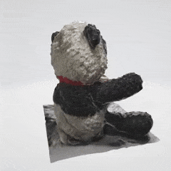

work in progress
Make a portable handheld virtual pet that can support higher quality images on a round display.
My current plan is to turn my stuffed animals into virtual pets I can take around with me as if it were a Tamagotchi.
I am also a fan of the idea to introduce various sensors and an IMU to increase possible interactions with my pets.
I think this is really cool to carry around as a wearable and fun to showcase to others as well.
I think it's cool to be able to interact with actual 3D pets, so I started with a scan of my panda stuffed animal.
I used Polycam, a photogrammetry 3D scanner for mobile, to scan my panda Kumi.
Polycam gives iirc about 15 free scans, so this was just enough for my purposes if I wanted to scan more.
My Pixel 6a does not support LiDAR like the iOS counterparts, so using photogrammetry which is a method of using images and stitches them together to create a 3D model of an object.
This is the same technology that Google uses for Google Earth.
Of course this comes with its limitations as it has trouble scanning dark, shiny, or clear areas.
My solution to this was to ensure good lighting by having a lamp overhead and just go around my desk for each scan.
I wanted a circular display for my virtual pet.
It's like a little portal to view my pet.
I opted for the GC9A01 1.28" TFT LCD display module (240 x 240px)
I got this LCD since it's not power hungry, and also a small size good enough for handheld.
For now, I got the display with the pin headers for debugging, but in the future I am planning to get ones with either the JST connectors or ribbon connectors.
I used the AnimatedGIF library to play GIFs from flash memory. I am planning to read GIFs from storage like a microSD card in the future.
With the current configuration, I have an IMU setup, I am hoping to be able to move the panda model freely as I rotate the device.
I also am looking at other image libraries such as LGVL for 2D stuff.
Another plan is using a rotary encoder around the display to be able to interact with the circular nature of the screen.
A battery management system is also a concern, I do have various sizes of LiPo batteries that I am able to tinker with, but I am going to try to research on souces that use ESP32 for handheld devices as using this as an assistant as well would be cool.
Stay tuned for future updates to this project!